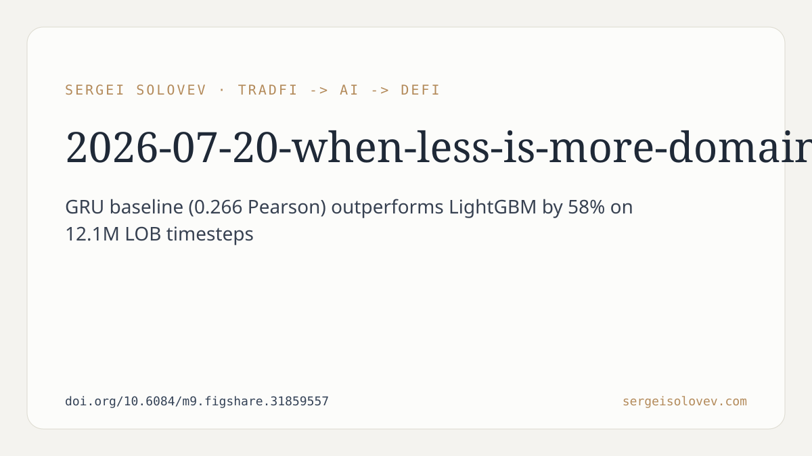

Two findings in this preprint contradict common practice in applied machine learning for finance. First, engineering 219 features from limit order book data produces no measurable gain over using 53 basic features when the model is a recurrent network. Second, combining a GRU with gradient boosting makes predictions worse, not better. Neither result is what you would expect if you followed standard advice about feature richness and ensemble diversity.
Predicting whether mid-price will move up or down in the short term, using limit order book (LOB) data. The dataset covers 12,165 LOB sequences totaling 12.1 million timesteps. The evaluation metric is weighted Pearson correlation between predicted and actual movements.
The GRU baseline achieves a weighted Pearson correlation of **0.266**. LightGBM, a strong gradient boosting baseline, comes in 58% lower. That gap is substantial, and it confirms the now fairly standard finding that sequential models handle time-ordered LOB data better than tree-based methods.
The proposed architecture, DA-BiGRU-CNN, is described as offering an "architecturally principled alternative" — the abstract does not claim it numerically dominates the GRU baseline. The value proposition is structural: separating price dynamics from liquidity dynamics in dedicated processing branches, rather than letting the model sort it out from a flat feature vector.
**Feature sufficiency.** A unidirectional GRU trained on 53 basic features achieves performance statistically equivalent to one trained on 219 features that include rolling statistics, exponential moving averages, and lag/difference transforms. The interpretation the authors offer is that recurrent hidden states implicitly learn these temporal patterns anyway, making the engineered features redundant. If this holds up across other datasets and settings, it has a practical implication: the substantial engineering work required to produce 219 features may be wasted effort when the backbone is recurrent.
The caveat the authors do not spell out here, but which any practitioner will note: "statistically equivalent" on one dataset with one model family is not a general result. Rolling statistics and EMAs might matter more under different market regimes, different assets, or with different architectures. The finding is worth taking seriously as a hypothesis; it is not settled evidence.
**Negative ensemble effect.** Combining the GRU with LightGBM consistently degraded prediction quality. This contradicts the standard intuition that model diversity — a sequential model and a tabular model should have low correlation in their errors — improves ensemble performance. The authors describe this as a documented empirical finding, not an explained mechanism. Why does the combination hurt? The abstract does not say. This is the more interesting open question, and also the more honest framing: here is something that did not work, and we do not fully know why.
DA-BiGRU-CNN decomposes LOB features into two channels: one for price information, one for volume information. Each channel gets its own bidirectional GRU encoder. A set of shared microstructure features feeds both branches. The outputs are then fused through a multi-scale convolutional bottleneck using Conv1d layers with kernels of size 3, 5, and 7. The design rationale is that price dynamics and liquidity dynamics behave differently and benefit from separate representational paths before fusion.
This is a reasonable architectural prior. Whether it translates into a consistent numerical improvement over a simpler GRU is not definitively answered in the abstract. The architecture is described as "principled," which is a structural argument rather than an empirical one.
The authors frame the problem as relevant to traditional exchanges, cryptocurrency centralized exchanges, and on-chain LOB protocols in DeFi. That framing is accurate in the sense that mid-price prediction from order book data is structurally similar across venues. The degree to which the specific findings transfer — particularly the feature sufficiency result — depends heavily on market microstructure differences between venues: tick size, queue priority rules, latency, and participant composition all vary considerably.
The preprint does not report results across multiple assets or market conditions, so generalizability is unknown. It does not discuss how prediction quality translates to actual trading performance after costs, slippage, and latency — a 0.266 Pearson correlation is a model evaluation metric, not a profitability estimate. The negative ensemble result lacks a mechanistic explanation, which limits how actionable the finding is.
The most valuable contributions here are the two negative or null results: feature engineering on top of a recurrent model does not help, and naive model combination hurts. Both findings push back against common defaults in quantitative finance pipelines. The domain-aware architecture is a reasonable design choice with a clear structural motivation, but its performance advantage over a simpler baseline is not the headline claim.
A Pearson correlation of 0.266 on a large dataset is a real signal, not noise. Whether it is sufficient for practical use depends entirely on what you intend to do with the predictions — a question this work, appropriately, does not try to answer.
---
Full preprint: https://doi.org/10.6084/m9.figshare.31859557